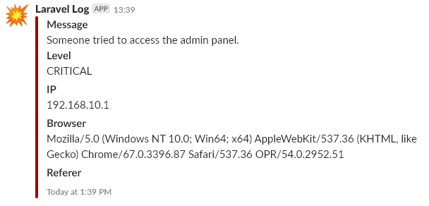

Logovanje
Prilikom izrade veb aplikacije vrlo je važno pratiti potencijalne greške,a kako se ovde koristi Laravel okruženje, logavanje se vrši automatski za svaki vid greške.
Log fajl se nalazi u: storage\logs\laravel.log
Laravel je podešen da radi logovanje na više kanala:
- Single - Njegov standardni log,
- Slack
Slack
Slack je podešen da prijavljuje greške čiji je minimalni nivo važnosti critical.
Ovo je moguće promeniti u konfiguraciji za logovanje: config\logging.php
Trenutno kako je podešen slack je:
'slack' => [
'driver' => 'slack',
'url' => env('LOG_SLACK_WEBHOOK_URL'),
'username' => 'LinkCutter Log',
'emoji' => ':boom:',
'level' => 'critical', // Minimalni nivo
],
Status greške je određen po RFC 5424 specifikaciji.
https://tools.ietf.org/html/rfc5424
Greške po važnosti:
Numerical Severity Code 0 Emergency: system is unusable 1 Alert: action must be taken immediately 2 Critical: critical conditions 3 Error: error conditions 4 Warning: warning conditions 5 Notice: normal but significant condition 6 Informational: informational messages 7 Debug: debug-level messages
Način na koji laravel obaveštava slack je pomoću webhook-a koji je podešen u Slack-u.
https://api.slack.com/incoming-webhooks
Kad se napravi hook potrebno je iskopirati URL do hook-a i dodati ga u .env fajlu kao LOG_SLACK_WEBHOOK_URL opcija.
Laravel logovanje
Način na koji možemo da logujemo grešku je preko Log fasade:
Log::emergency($message);
Log::alert($message);
Log::critical($message); // Odavde pa na gore se loguje u slack-u
Log::error($message);
Log::warning($message);
Log::notice($message);
Log::info($message);
Log::debug($message);
Recimo da želimo da obavestimo administratora da neko želi da pristupi admin sistemu a za to nema odgovarajuće permisije. To je moguće uraditi u posredniku (middleware-u) koji proverava da li korisnik ima permisije i obaveštava administratora.
Log::critical('Someone tried to access the admin panel.', [
'IP' => $request->ip(),
'Browser' => $request->server('HTTP_USER_AGENT'),
'Referer' =>$request->server('HTTP_REFERER'),
]);
Kako to izgleda kad administrator primi poruku:

Sentry
Kao dodatni i profesinalniji način logovanja koristi se Sentry. Sentry obuhvata obradu izuzetaka koji se šalju Sentry-u na obradu.

Svaka greška koja se desi, Sentry pretvara u task koji može da se dodeli nekom od članova tima. Na taj način svaki izuzetak biva rešen.
Obaveštenje se takođe šalje na mail.